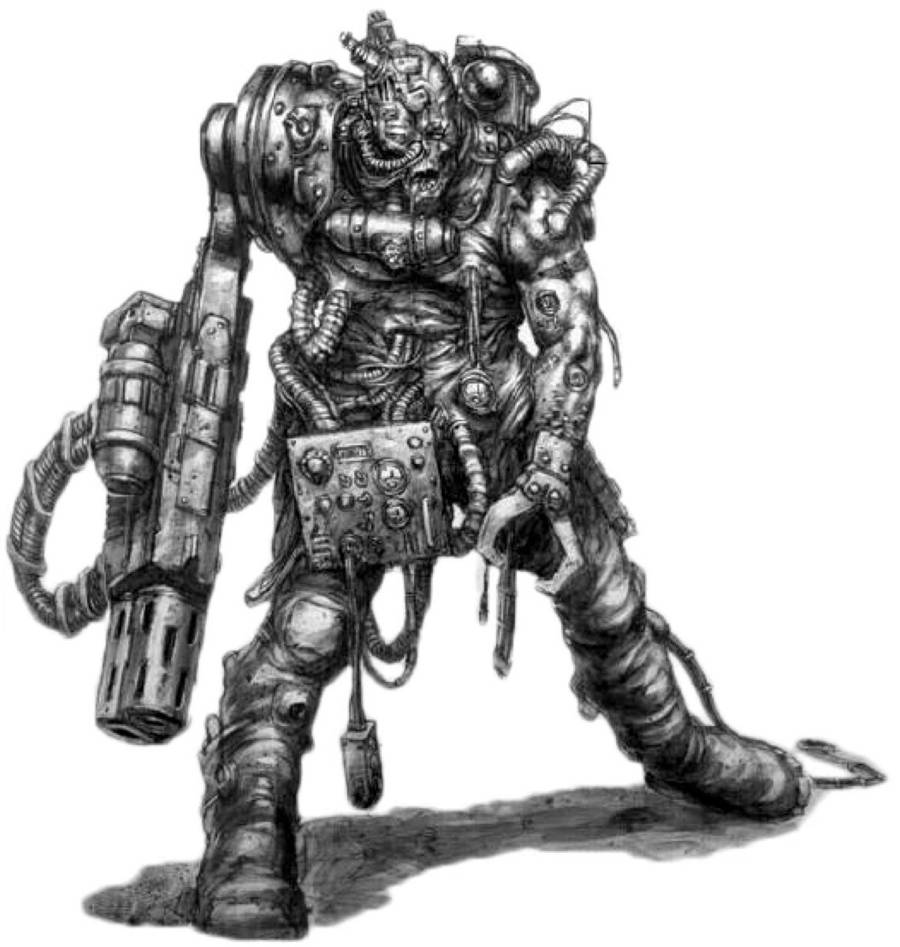

Servitor
| Servitor | |
|---|---|
 A heavy labour servitor of a forge world of the Adeptus Mechanicus Artwork © Games Workshop | |
| Type | Lobotomised human cyborg with programmed functions |
| Makers | Adeptus Mechanicus, on its forge worlds |
| Source of bodies | Condemned criminals; vat-grown clones; failed Space Marine aspirants |
| Control | Fixed programming; direction by a Tech-priest |
| Main types | Technomats, lexomats, gun and combat servitors, Mechanicus battle servitors (Kataphron) |
| Related | Arco-flagellant; Servo-skull; Legio Cybernetica |
A servitor is a cyborg made from a human body whose mind has been largely erased and replaced by machine programming. Servitors are the Imperium's mechanical labour force: they work in forges and mines, crew starships, guard doors, carry loads, keep records and fight in battle. They are found wherever the Imperium needs a worker who will do one task without rest and without thought. They make up the vast bulk of the population of Mars and the other forge worlds.[1][2]
The servitor exists because the Cult Mechanicus forbids the making of thinking machines, whose artificial minds its tech-priests regard as blasphemy against the Omnissiah. The servitor is built around a human brain, however reduced. Most servitors are criminals sentenced to perpetual servitude by the Adeptus Arbites and handed to the Mechanicus to be wiped and reprogrammed, or vat-grown clones made by the Mechanicus; some chapters of Space Marines make theirs from aspirants whose bodies rejected the implants of the Astartes and left them brain-dead.[1]
History
[edit]Servitors have been made by the Adeptus Mechanicus since long before the Imperium. They are supplied by the forge worlds to the departments of the Adeptus Terra, such as the Administratum, to the Inquisition, to the Astra Militarum and to the Chapters of the Adeptus Astartes. Large combat servitors such as the vat-grown Herakli, which carried assault cannons and heavy lasers, were used in the era of the Horus Heresy but are rarely seen now.[1][2]
Manufacture
[edit]A servitor is made by removing or destroying most of the higher functions of the brain, a process known as mind-wiping, and replacing them with a cortex implant that holds a fixed set of instructions. The limbs and organs needed for its function are replaced or supplemented with bionics: a drill or crane in place of an arm, a weapon mount, an auspex in place of an eye. Many servitors have their lower bodies removed entirely and are fixed to tracks or to the machine they tend.[1]
The quality of the work varies greatly. A servitor made by a skilled magos on a great forge world may serve for centuries; one made cheaply on a poor world may last a few years. The brain of a servitor is altered and fragmented, and functions poorly unless it is supervised: most eventually fall into a state of mindlock, babbling nonsense as they try to assert control over their functions. Only a malfunctioning servitor develops any sense of self.[1][3]
Sources of bodies
[edit]Many servitors were once criminals who offended Imperial law or the Mechanicus, and who are sentenced by the Arbitrators of the Adeptus Arbites to perpetual servitude. Others are vat-grown, sub-human clones whose implants are fitted after "birth".[2]

Types
[edit]Labour servitors
[edit]The commonest servitors do manual work: lifting cargo, loading guns aboard ships, running machinery in manufactoria, tending crops on agri worlds and maintaining the systems of hive cities. Many are built into the machines they tend and never move from them.[2]
Combat servitors
[edit]Combat or gun servitors carry heavy weapons and are used to guard Mechanicus temples and to support tech-priests in battle. Without a tech-priest to direct them they do little but fire wildly, and may wander off after some erroneous protocol. The Enginseers of the Astra Militarum and the Techmarines of the Space Marines take servitors into battle with them.[4]
Kataphron servitors
[edit]The Kataphron Battle Servitor is a heavy battle servitor of the Mechanicus' military forces, much larger and more powerful than the servitors that perform other tasks. It is severed from all emotion and independent thought and acts as a living weapon under the orders of tech-priests. It has two usual variants, the Kataphron Breacher and the Kataphron Destroyer.[1][2]
Specialist servitors
[edit]Other servitors serve as scribes and record-keepers (lexmechanic or scribe servitors), as medical assistants (chirurgeon servitors), as ship's crew controlling turrets or sensors, or as bearers and attendants. Light choir drones serve in the cathedrals and shrine worlds of the Ecclesiarchy. The Cenobyte servitors of the Black Templars follow their Chaplains and carry relics into battle.[2]
Arco-flagellants
[edit]The Arco-flagellant is a specialised servitor made from heretics whose crimes were not severe enough for immediate execution. After muscle grafts, combat drugs and implanted weapons, and a reconditioning of the mind, it becomes a berserk killer that seeks only the destruction of the Emperor's enemies.[5]
Status and doctrine
[edit]Every servitor carries an identification number, and the number and the unit to which it belongs are its whole identity. Its actions are driven by its limited programming. A condemned criminal who is made a servitor is held to have been given one last chance to serve the Imperium.[1][6]
Because the servitor is the Mechanicus' answer to the forbidden thinking machine, any attempt to give servitors greater intelligence is regarded with suspicion. The Mechanicus therefore keeps the minds of servitors rudimentary, and fears the artificial intelligences that it forbids.[1]
See also
[edit]References
[edit]- ^ a b c d e f g h Parker, Steve. Rynn's World (novel). Black Library, Part 1, Ch. 6. Codex Adeptus Astartes - Space Marines (8th Edition), pp. 85, 107, 137, 155. Games Workshop.
- ^ a b c d e f Codex: Adeptus Mechanicus (8th Edition), pp. 41, 47, 77. Games Workshop. Codex: Astra Militarum (8th Edition), pp. 61, 100. Games Workshop.
- ^ Thorpe, Gav. Deliverance Lost (novel). Black Library. Warhammer 40,000: Rulebook (8th Edition), pg. 50. Games Workshop.
- ^ Codex: Space Marines (5th Edition). Games Workshop. Codex: Space Marines (4th Edition). Games Workshop.
- ^ Codex Imperialis (1st Edition), pp. 22, 41, 45. Games Workshop. Realm of Chaos: The Lost and the Damned, "The Cult Mechanicus".
- ^ Black Crusade: Broken Chains (RPG), pg. 31. Dark Heresy: The Inquisitor's Handbook (RPG), pp. 141, 153.